Editor de vídeo
No es nuestra intención en Blender: 3D en la Educación profundizar en la edición de vídeo pero, puesto que Blender incluye un extraordinario editor, vamos a aprovechar la ocasión para hacer un pequeño montaje.
Entorno Video Editing
Abrimos Blender en un documento nuevo y eliminamos todos los objetos de la escena por defecto (cubo, lámpara y cámara); después nos vamos al entorno de trabajo Video Editing.
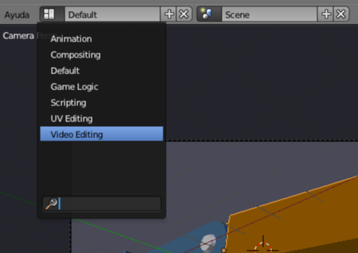Esto es lo que nos muestra Blender para edición de vídeo.
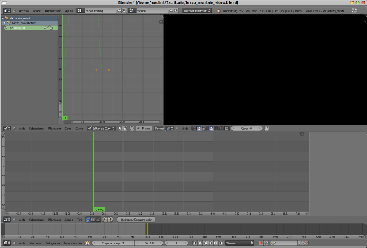
Arriba a la izquierda tenemso un Editor de Gráficas  , abajo del todo hay un editor Línea de tiempo
, abajo del todo hay un editor Línea de tiempo  y tanto en la parte de arriba a la derecha (fondo negro) como en la parte central hay sendos editores de Secuencias de vídeo .
y tanto en la parte de arriba a la derecha (fondo negro) como en la parte central hay sendos editores de Secuencias de vídeo .
Los dos editores Secuencias de vídeo muestran aspectos distintos porque se encuentran en modos de visualización diferentes. El de arriba se encuentra en modo Previsualización...
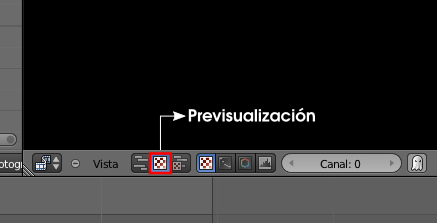... y el otro está en modo Secuenciador.
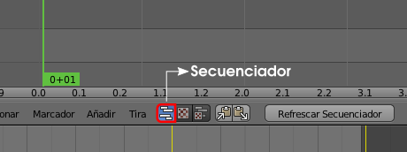Es posible incluir clips de vídeo, pero nosotros nos quedamos con la escena que ya está creada dentro del archivo y que incluye la información para la animación del ciclo subir-bajar del brazo. Sin duda, sería mucho más rápido renderizar los 99 fotogramas y después incluirlos en este montaje como Película; pero como nuestra animación no es muy larga, y es nuestro primer contacto con el editor Secuencias de vídeo , no le damos importancia a este detalle sobre optimización del trabajo.
Por lo tanto seguimos trabajando en el mismo archivo.
En Blender se puede crear más de una escena dentro de un mismo archivo. En nuestro caso sólo hay una escena llamada Scene (ver parte alta de la interfaz).
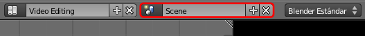En el editor Secuencias de vídeo central usamos el menú Añadir/Escena para ir a buscarla .
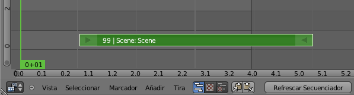Lo desplazamos ("G") para que comience en el fotograma 1.
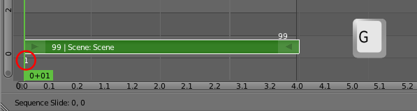Contamos con un sonido apropiado para la ocasión.
Chair Hydraulic 2 // Autor: jesabat // Licencia: CC-BY-3.0 (Creative Commons)
Del mismos modo que cargamos el clip de vídeo incluimos el sonido usando Añadir/Sonido (siempre que queramos reproducimos la animación con "Alt_A" para comprobar el resultado; incluso podemos trabajar con la animación siempre en marcha.)
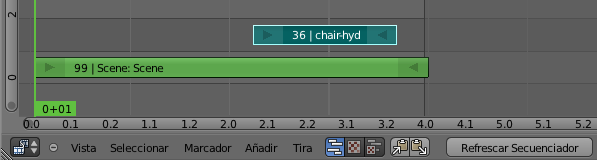Lo desplazamos ("G") para que comience en el fotograma 25.
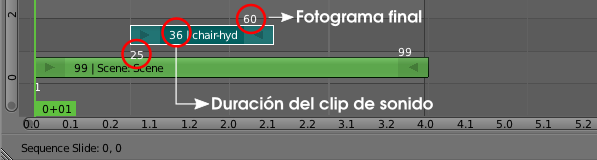Duplicamos ("Shift_D") ese clip de sonido y lo desplazamos para que empiece justo a continuación del original.
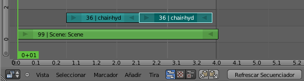Y ahora le hacemos un par de modificaciones. Con clic derecho sobre la flecha que determina el inicio del clip, la seleccionamos y después la desplazamos ("G") hacia la derecha para que el sonido comience en el fotograma 70. No estamos diciendo que el clip comience en ese fotograma sino que el trozo de sonido que queda entre el fotograma 01 y el 69 permanezca mudo.
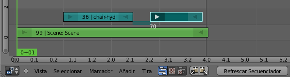Hacemos lo mismo con la flecha que determina el final del clip de sonido. En este caso la desplazamos ("G") hacia la izquierda hasta el fotograma 85.
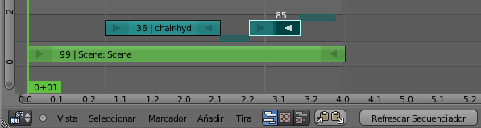Ya está configurado todo el ciclo con sonido incluido. Ahora seleccionamos los tres elementos, los duplicamos ("Shift_D") y los colocamos a continuación.
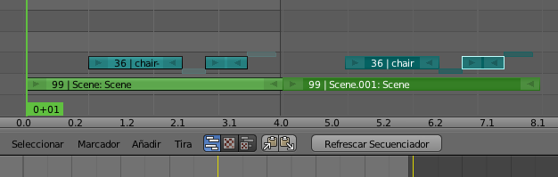Repetimos la operación para que el ciclo se repita otras dos veces más (un total de cuatro veces en total). Esto hace que la animación final tenga una duración de 99x4=396 fotogramas y así lo determinaremos en el panel de Render cuando vayamos a hacer la animación final.
En el entorno de trabajo Default, por ejemplo, cuando hagamos "Alt_A" la animación en Vista 3D sólo durará un ciclo, pero en el renderizado de la animación obtendremos cuatro.
El sonido en la animación final
Igual que se estipula en formato de salida para el vídeo con su correspondiente codec (MPEG y MP4 en nuestro caso), es necesario definir una codificación para el sonido. También lo hacemos en el panel Render en la botonera Codificación.
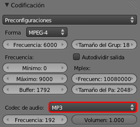Codec de audio: MP3 es una buena opción.